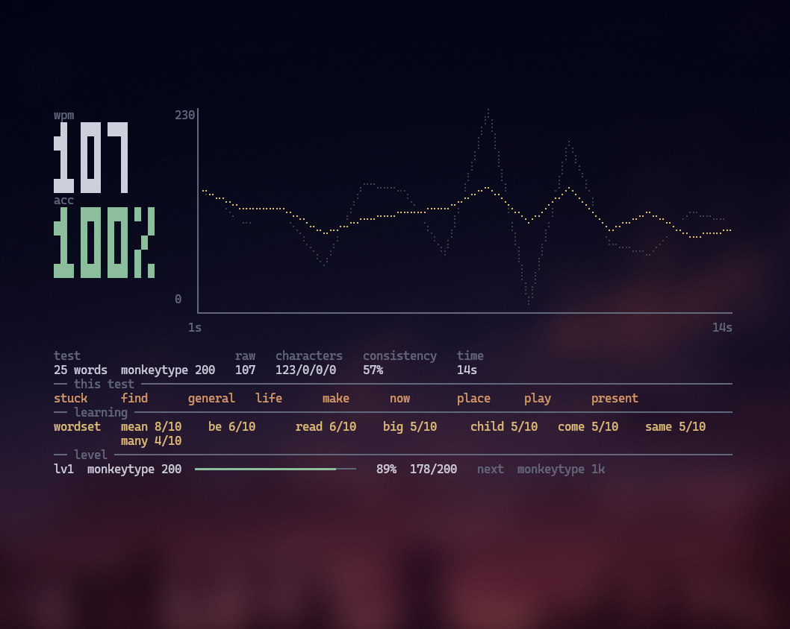

typeladder
An adaptive typing test for the terminal. It climbs from the commonest English words to the rarest, re-drills what you miss and brings mastered words back for review. Works with plain typing, stenography and text expanders.

install
yay -S typeladder # Arch, from the AURgit clone https://github.com/noahlyk/typeladder
cd typeladder && make && sudo make installwhat it does
- ladder: Monkeytype's English 200, then 1k, 5k, 10k and 25k, then your own lists.
- adaptive: a word is mastered at 9 clean of its last 10 attempts, and comes back for review on a 1, 3, 7, 21, 60, 180 day schedule.
- fair scoring: corrections of wrong text count; undoing a right word costs a quarter, and typing the next word early costs nothing.
- any input: zero config for plain typing; dictionaries for any steno theory or text expander (Plover/keymux JSON, espanso YAML, TOML) give hints after each test.
- hooks: run commands before and after a session or test, such as pausing espanso.
more
- source on GitHub (GPL-3.0-or-later)
- configuration
- AUR package